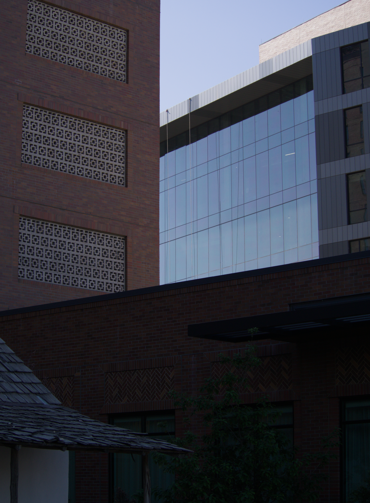

About Me
Hello! I am Fabian. I am a 25 year old student at UTSA. I am graduating this fall with plans to continue my education abroad at King Abdullah University of Science and Technology (KAUST) in Saudi Arabia.
Back to Top
Classes I have taken (bold is current)
- Applications Programming
- Applied Linear Algebra
- Artificial Intelligence
- Cloud Computing
- Compiler Construction (one of my favourites)
- Computer Architecture
- Data Science (another favourite of mine)
- Data Structures
- Database Systems
- Design and Analysis of Algorithms (another absolute favourite of mine)
- Operating Systems
- Systems Programming
- Web Technologies
- ...
- ...
- And many more!
Back to Top
Hobbies, Movies, and Interests
I love to cycle/run, photography (I use a 2012 Olympus OMD EM5 MKI), read (Goodreads), watch movies and shows (Letterboxd), game, and listen to music (Last.fm).
A few of my favourite books
- Gardens of the Moon - Stephen Erikson
- Open Veins of Latin America - Eduardo Galeano
- In the Eye of The Sun - Ahdaf Soueif
- Orientalism - Edward Said
- The Right to Sex: Feminism in the Twenty-First Century - Amia Srinivisan
My favourite movies/shows
- A Moment of Innocence
- Nobody Knows
- Ripley (one of the most beautiful shows I have ever seen)
- The setting--1960's Italy--is amazing
- The cinematography is so beautiful
- Rear Window
- Children of Shatila
My favourite music genres
- Classical Piano
- Banda
- Ambient
- Tarab
- Jazz
Back to Top
Work Experience & Dream Job
Before returning to university, I spent about two years working at a medical spa, followed by four years in insurance.
After graduating, I plan to pursue a graduate degree at King Abdullah University of Science and Technology (KAUST) in
Saudi Arabia, with the goal of becoming a data scientist or machine learning engineer.
Back to Top
Contact Information
Photo I took of the new UTSA San Pedro building

Image of houses in Al-Balad--Old Jeddah, Saudi Arabia

Back to Top